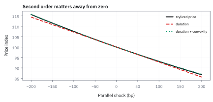

18.2 The Yield Curve, Duration, and Convexity
ราคาพันธบัตรคือผลบวกของเงินสดที่คิดลดคนละอัตรา duration คือความชันของราคาต่อ yield convexity คือความโค้ง และทั้งสองตัวยังพลาดเมื่อเส้นอัตราบิด
พันธบัตรอายุ 3 ปี จ่ายคูปอง 4% ต่อปี (\$40 ต่อหน้าตั๋ว \$1,000) ซื้อขายที่ yield 5% ราคา \$972.77 เทรดเดอร์ถามว่า ถ้า yield ขึ้น 1 จุดเป็น 6% จะขาดทุนกี่เปอร์เซ็นต์ คนใหม่ตอบว่า 3% เพราะอายุ 3 ปี ถูกไหม และถ้า yield ลง 1 จุดแทน จะได้กำไรเท่ากับที่เสียไหม?
ลองตอบก่อนเปิดเฉลย
ไม่ถูกทั้งสองข้อ ราคาจริงเหลือ \$946.54 คือลด 2.696% ไม่ใช่ 3% เพราะคูปองสองก้อนกลับมาก่อนปีที่ 3 ความไวที่ถูกคือ modified duration 2.7470 ซึ่งทายได้ \$946.05 และเมื่อเติม convexity ได้ \$946.55 ห่างของจริงไม่ถึงหนึ่งเซนต์ ถ้า yield ลงเป็น 4% ราคาขึ้นเป็น \$1,000.00 พอดี ได้ \$27.23 มากกว่าที่เสีย \$26.23 ความไม่สมมาตรนี้คือ convexity
สิ่งที่เราจะสร้าง
18.1 ย้ายเงินข้ามเวลาด้วยอัตราเดียว หน้านี้ใช้กับพันธบัตรจริง ซึ่งมีสองเรื่องที่ต้องเพิ่ม เรื่องแรก เงินที่มาคนละปีคิดลดด้วยอัตราคนละตัวตามเส้นอัตรา (yield curve) เรื่องที่สอง โต๊ะพันธบัตรต้องรู้ทุกวันว่าถ้าอัตราขยับ พอร์ตได้เสียเท่าไร โดยไม่ต้องคิดราคาใหม่ทุกครั้ง
เราเริ่มจากพันธบัตรสองปีของ 18.1 ด้วยมือ ตั้งราคาบนเส้นอัตรา ย่อเหลือ yield ตัวเดียว หาอนุพันธ์อันดับหนึ่งได้ duration อันดับสองได้ convexity (ใช้ Taylor แบบเดียวกับ 12.2) แปลงเป็นเงินด้วย DV01 ลอง hedge พันธบัตร 3 ปีด้วยพันธบัตร 10 ปี แล้วดูว่า hedge นั้นพังเมื่อเส้นอัตราบิดแทนที่จะขยับทั้งเส้น ซึ่งเป็นเหตุผลของ PCA ใน 17.4
ศัพท์ที่ใช้ในหัวข้อนี้
- Yield curve และ zero rate
- เส้นที่บอกอัตราดอกเบี้ยของแต่ละอายุในวันเดียวกัน zero rate คืออัตราสำหรับเงินก้อนเดียวที่อายุนั้น ใช้คิดลดเงินแต่ละก้อนด้วยอัตราของอายุตัวเอง 20.1 จะสร้างเส้นนี้จากราคาตลาด
- Yield to maturity (YTM)
- อัตราเดียวที่ถ้าใช้คิดลดเงินทุกก้อนของพันธบัตรแล้วได้ราคาตลาดพอดี ตลาดใช้ quote พันธบัตรเป็นตัวเลขเดียว แต่เป็นค่าเฉลี่ยของเส้นอัตรา ไม่ใช่อัตราของอายุใดอายุหนึ่ง
- Macaulay และ modified duration
- Macaulay คือเวลารอเฉลี่ยของเงินถ่วงด้วย PV มีหน่วยเป็นปี modified คือ Macaulay หารด้วย $1+y$ และบอกว่า yield ขึ้น 1 จุด ราคาลงราวกี่เปอร์เซ็นต์
- Convexity
- ความโค้งของราคาเทียบ yield (อนุพันธ์อันดับสองหารด้วยราคา) ใช้แก้ค่าทายของ duration เมื่ออัตราขยับมาก และบอกว่าพันธบัตรธรรมดาได้เปรียบทั้งขาขึ้นและขาลง
- Basis point (bp) และ DV01
- 1 bp คือ 0.01 จุด หรือ 0.0001 DV01 (dollar value of 01) คือเงินที่พอร์ตได้เสียเมื่อ yield ขยับ 1 bp ใช้บวกความเสี่ยงข้ามพันธบัตรหลายตัวเป็นเงินก้อนเดียว
- Parallel shift และ twist
- parallel shift คือทุกอายุขยับเท่ากัน twist คือระยะสั้นกับระยะยาวขยับคนละทาง duration ตัวเดียวรับมือได้แค่แบบแรก
สัญลักษณ์และหน่วย
| สัญลักษณ์ | ความหมาย | หน่วย |
|---|---|---|
| $CF_i,\ t_i$ | เงินสดก้อนที่ $i$ และเวลาที่ได้ | \$, ปี |
| $P,\ PV_i$ | ราคาพันธบัตร และ PV ของก้อนที่ $i$ | \$ |
| $y,\ z(t)$ | yield to maturity และ zero rate ของอายุ $t$ (ทบต้นรายปี) | ต่อปี |
| $D_{\rm mac},\ D_{\rm mod}$ | Macaulay และ modified duration | ปี |
| $C$ | convexity | ปี$^2$ |
| $\Delta y$ | การขยับของ yield (1 bp = 0.0001) | ต่อปี |
| $V$ | มูลค่าตลาดของตำแหน่ง | \$ |
ขั้นที่ 1 — ลองด้วยมือ: พันธบัตรสองปีของ 18.1 เมื่อ yield ขึ้น 1 จุด
ก่อนมีสูตร เอาพันธบัตรที่จ่าย \$4 ปีที่ 1 และ \$104 ปีที่ 2 จาก 18.1 มาคิดราคาใหม่ที่ 6% แล้วดูว่าตัวเลขตัวเดียวทายการตกได้ใกล้แค่ไหน ตัวเลขนั้นคือเวลารอเฉลี่ยของเงิน ถ่วงด้วย PV ของแต่ละก้อน
ก้อนปีที่ 1 มีน้ำหนัก 3.88% ของราคา ก้อนปีที่ 2 มี 96.12% เวลารอเฉลี่ยจึงเป็น 1.96 ปี ไม่ใช่ 2 ปี หารด้วย 1.05 แล้วได้ 1.87 ซึ่งทายว่า yield ขึ้น 1 จุด ราคาลง 1.87%
ของจริงลด 1.84% ค่าทายเส้นตรงพลาดไป 0.026 จุด ในทางที่เข้าข้างคนถือ คือราคาตกน้อยกว่าที่เส้นตรงบอก ส่วนต่างนี้คือความโค้งที่ขั้นที่ 7 จะวัด ส่วนตัวหาร 1.05 มาจากไหน ขั้นที่ 5 จะหาอนุพันธ์ให้เห็น
ขั้นที่ 2 — ราคาบนเส้นอัตรา: เงินแต่ละก้อนใช้อัตราของอายุตัวเอง
ในตลาด เงินหนึ่งปีกับเงินสามปีไม่ได้คิดลดด้วยอัตราเดียวกัน ราคาพันธบัตรจึงเป็นผลบวกของเงินแต่ละก้อนคูณ discount factor ของอายุนั้น การบวกกันได้ไม่ใช่แค่พีชคณิต แต่เป็นข้อบังคับของตลาด: เงินแต่ละก้อนแยกซื้อขายได้ (ตลาดสหรัฐฯ เรียก STRIPS) ถ้าราคาทั้งใบไม่เท่าผลบวกของชิ้นย่อย คนจะซื้อฝั่งถูกขายฝั่งแพงจนราคาเท่ากัน
ตัวอย่างสมมติ: อ่านเส้นใน Figure 18.2a เป็น zero rate ได้ 1 ปี 4.60% และ 2 ปี 4.35% อายุ 3 ปีไม่มีบนเส้น จึงลากเส้นตรงระหว่างจุด 2 ปีกับ 5 ปี ไปหนึ่งในสามของทาง พันธบัตร 3 ปีคูปอง 4% จึงมีราคา \$992.02
Figure 18.2a — เส้นอัตราสมมติของพันธบัตรรัฐบาลสหรัฐฯ

จุดหกจุดที่อายุ 0.25, 1, 2, 5, 10 และ 30 ปี มี yield 4.80, 4.60, 4.35, 4.15, 4.20 และ 4.35% ต่อปี เป็นตัวเลขสมมติเพื่อสอน ไม่ใช่ภาพตลาดวันใดวันหนึ่ง ช่วงสั้นกลับหัว (อายุสั้นให้สูงกว่า) ต่ำสุดที่ 5 ปี แล้วค่อยขึ้น ขั้นที่ 2 อ่านเส้นนี้เป็น zero rate และลากเส้นตรงหาอายุ 3 ปี
ขั้นที่ 3 — ย่อทั้งเส้นเหลือ yield ตัวเดียว
ตลาด quote พันธบัตรด้วยตัวเลขเดียว คือ yield to maturity: อัตรา $y$ ตัวเดียวที่ใส่แทนทุกอายุแล้วได้ราคาตลาดพอดี สมการนี้เป็นพหุนามกำลังสามของ $1/(1+y)$ ไม่มีสูตรปิดที่สะดวก จึงหาด้วย bisection เหมือน 18.1: ราคาลดลงเมื่อ $y$ เพิ่ม ถ้าราคาที่ $y$ กลางช่วงสูงกว่าเป้า ให้ขยับ $y$ ขึ้น
YTM 4.2893% อยู่ใกล้อัตรา 3 ปี 4.2833% มาก เพราะเงินก้อนปีที่ 3 คิดเป็น 92% ของราคา YTM จึงเป็นค่าเฉลี่ยของเส้นอัตรา ถ่วงด้วยว่าเงินของพันธบัตรอยู่ที่อายุไหน พันธบัตรสองตัวที่อายุเท่ากันแต่คูปองต่างกันจึงมี YTM ต่างกันได้บนเส้นเดียวกัน
ส่วนที่เหลือของหน้าใช้ YTM ตัวเดียว และสมมติตามโจทย์เปิดหน้าว่าพันธบัตรนี้ซื้อขายที่ $y=5\%$ เพื่อให้เลขกลม ความไวที่หาได้จึงเป็นความไวต่อการขยับของทั้งเส้นแบบขนาน ขั้นที่ 11 จะดูกรณีที่ไม่ขนาน
ขั้นที่ 4 — พันธบัตร 3 ปีที่ yield 5%: ราคาและน้ำหนักของแต่ละก้อน
โจทย์ให้อะไรมาบ้าง: คูปอง \$40 ปลายปีที่ 1 และ 2 ปลายปีที่ 3 ได้ \$1,040 (คูปองกับเงินต้น) yield 5% ต่อปี
คำตอบ: ราคา \$972.7675 ต่ำกว่าหน้าตั๋ว \$27.23 เพราะคูปอง 4% ต่ำกว่า yield 5% เงินก้อนสุดท้ายหนัก 92.35% ของราคา
ตรวจเองใน 10 วินาที: น้ำหนักสามตัวรวมกันได้ 1.000000 และถ้าคูปองเท่ากับ yield ราคาต้องเท่าหน้าตั๋ว ขั้นที่ 8 จะเห็นว่าที่ yield 4% ราคาคือ \$1,000.00 พอดี
ขั้นที่ 5 — duration คืออนุพันธ์ของราคา
อยากรู้ว่าราคาเปลี่ยนเท่าไรเมื่อ $y$ ขยับนิดเดียว สิ่งที่ต้องการคือ $dP/dy$ หารด้วย $P$ เพื่อให้เป็นเปอร์เซ็นต์ หาอนุพันธ์ทีละก้อน เลขยกกำลัง $-t_i$ หล่นลงมาเป็นตัวคูณ แล้วสิ่งที่เหลือคือ $PV_i$ พอดี
$\sum_i t_iPV_i/P$ คือเวลาเฉลี่ยที่ถ่วงด้วยน้ำหนัก $w_i=PV_i/P$ ชื่อ “อายุเฉลี่ย” จึงไม่ได้ตั้งลอย ๆ มันหล่นออกมาจากอนุพันธ์เอง ตัวหาร $1+y$ มาจากกำลังที่ลดลงหนึ่ง ซึ่งเป็นที่มาของ 1.05 ในขั้นที่ 1
แถวสุดท้ายคือการประมาณด้วยเส้นสัมผัสแบบ 12.2 ใช้ได้ดีเมื่อ $\Delta y$ เล็ก ส่วนที่คลาดคือความโค้ง
ขั้นที่ 6 — duration และ DV01 ของพันธบัตร 3 ปี
โจทย์ให้อะไรมาบ้าง: น้ำหนักจากขั้นที่ 4 และ $y=5\%$ ตำแหน่งที่ถือมีมูลค่าตลาด \$100 ล้าน
คำตอบ: เวลารอเฉลี่ย 2.8844 ปี modified duration 2.7470 ใบละ \$0.2672 ต่อ bp และตำแหน่ง \$100 ล้านได้เสีย \$27,470 ต่อ bp (ค่าเต็ม 27,470.28)
ตรวจเองใน 10 วินาที: $D_{\rm mac}$ ต้องอยู่ต่ำกว่าอายุ 3 ปีเล็กน้อย เพราะคูปองสองก้อนหนักรวมแค่ 7.6% และ 1 bp ของ \$100 ล้านคือ \$10,000 คูณ 2.747 ได้ \$27,470
ขั้นที่ 7 — convexity คืออนุพันธ์อันดับสอง และทำไมเป็นบวก
ขั้นที่ 1 เห็นแล้วว่าเส้นตรงทายราคาตกมากเกินไป เติมพจน์อันดับสองของ Taylor ก็จะได้ความโค้ง หาอนุพันธ์ของ $dP/dy$ ซ้ำอีกครั้ง กำลัง $-t_i-1$ หล่นลงมาคูณกับ $-t_i$ ที่มีอยู่ เครื่องหมายลบสองตัวคูณกันเป็นบวก
ถ้าเงินทุกก้อนเป็นบวกและไม่เปลี่ยนตามอัตรา ทุกพจน์ของ $C$ เป็นบวก และ $(\Delta y)^2$ เป็นบวกทั้งขาขึ้นขาลง พจน์นี้จึงบวกคืนให้เสมอ: ราคาตกน้อยกว่าเส้นตรง และขึ้นมากกว่าเส้นตรง
ถ้าคิดลดแบบต่อเนื่อง $P=\sum_i CF_ie^{-yt_i}$ อนุพันธ์ไม่มีตัวหาร $1+y$ จึงได้ $D_{\rm mod}=D_{\rm mac}$ และ $C=\sum_i t_i^2PV_i/P$ ตัวเลขต่างกันเล็กน้อยตามกติกาทบต้น ต้องใช้กติกาเดียวกับที่ใช้ quote yield
ขั้นที่ 8 — yield ขึ้นและลง 1 จุด: เส้นตรง เส้นโค้ง และของจริง
โจทย์ให้อะไรมาบ้าง: พันธบัตร 3 ปีของขั้นที่ 4 ราคา 972.7675 $D_{\rm mod}=2.7470$ และ $\Delta y=\pm0.01$
คำตอบ: $c_2$ คือพจน์ convexity เป็นสัดส่วนของราคา แถว $P_{+}$ คือ yield ขึ้น 1 จุด แถว $P_{-}$ คือลง 1 จุด ในแต่ละแถว ตัวแรกคือ duration อย่างเดียว ตัวที่สองเติม convexity ตัวที่สามคือคิดราคาใหม่จริง ที่ +1 จุด เส้นตรงพลาด \$0.4944 พจน์ convexity บวกคืน \$0.5022 เหลือพลาดแค่ \$0.0078 คือปิดช่องว่างได้ 98.4% ที่ −1 จุด ได้ \$27.23 ขณะที่ +1 จุดเสีย \$26.23
ตรวจเองใน 10 วินาที: ที่ 4% คูปองเท่ากับ yield ทุกปีคูปอง \$40 จ่ายดอกเบี้ยของ \$1,000 พอดี ราคาจึงต้องเป็น \$1,000 ตรงกับแถวสุดท้าย
Figure 18.2b — ราคาโค้ง เส้นตรงของ duration พลาดมากขึ้นเมื่ออัตราขยับไกล

แกนนอนคือการขยับของ yield −200 ถึง +200 bp (201 จุด) เส้นทึบ (stylized price) คือ $100/(1+\Delta y)^{7.2}$ เส้นประแดงคือ $100(1-7.2\Delta y)$ เส้นจุดเขียวคือ $100(1-7.2\Delta y+\tfrac12(68)\Delta y^2)$ ที่ +200 bp ได้ 86.71, 85.60 และ 86.96 ข้อควรรู้: เส้นทึบนี้มี convexity จริง $7.2(8.2)=59.04$ ไม่ใช่ 68 เส้นจุดจึงเกินเส้นทึบเล็กน้อยทั้งสองฝั่ง แต่ก็ยังใกล้กว่าเส้นตรงมาก
ขั้นที่ 9 — แปลงเป็นเงิน: พอร์ต \$10 ล้าน เมื่อ yield ขึ้น 10 bp
โจทย์ให้อะไรมาบ้าง: ตำแหน่งพันธบัตรรัฐบาลสหรัฐฯ สมมติ มูลค่า \$10 ล้าน $D_{\rm mod}=7.2$ $C=68$ yield ขึ้นทั้งเส้น 10 bp คือ $\Delta y=0.001$
คำตอบ: ขาดทุนราว \$71,660 เส้นตรงให้ \$72,000 และ convexity คืน \$340 หรือ 0.5% ของขาดทุน ที่ 10 bp จึงเล็ก แต่พจน์กำลังสองโตร้อยเท่าเมื่อขยับสิบเท่า ที่ 100 bp จะเป็น \$34,000
ตรวจเองใน 10 วินาที: DV01 \$7,200 คูณ 10 bp ได้ \$72,000 ตรงกับส่วนเส้นตรง
Figure 18.2c — ขาดทุนตาม duration อย่างเดียวของพอร์ต \$10 ล้าน

แท่งห้าแท่งคือ $10{,}000{,}000(7.2)\,\text{bp}/10{,}000$ ที่ 1, 5, 10, 25 และ 50 bp ได้ \$7,200, \$36,000, \$72,000, \$180,000 และ \$360,000 เป็นเส้นตรงล้วน ไม่มี convexity ใช้เป็นตัวเลขความเสี่ยงเบื้องต้น ไม่ใช่การทดสอบภาวะวิกฤตที่ครบ
ขั้นที่ 10 — hedge ด้วย DV01: ขนาดที่ทำให้ความไวรวมเป็นศูนย์
ถือพันธบัตร 3 ปีมูลค่า \$100 ล้าน อยากตัดความเสี่ยงอัตราออก ด้วยการชอร์ตพันธบัตร 10 ปีคูปอง 5% ที่ yield 5% (ราคา \$1,000 พอดี) ต้องชอร์ตเท่าไร ให้ DV01 สองฝั่งเท่ากัน แล้วลองขยับอัตราดูว่าเหลืออะไร
เมื่อ DV01 เท่ากัน พจน์ duration ของสองฝั่งหักล้างกันพอดี ที่เหลือคือพจน์ convexity เราชอร์ตตัวที่โค้งกว่า จึงเสียทั้งขาขึ้นและขาลง คิดราคาใหม่จริงได้ −\$813.66 ที่ +10 bp, −\$77,829.00 ที่ +100 bp และ −\$85,988.39 ที่ −100 bp
ความไวเป็นศูนย์จึงไม่ได้แปลว่าไม่มีความเสี่ยง แค่ความเสี่ยงอันดับหนึ่งหายไป
ขั้นที่ 11 — เมื่อเส้นอัตราบิด: hedge ที่ DV01 เป็นศูนย์ก็ยังได้เสียหลายแสน
ทุกขั้นที่ผ่านมาสมมติว่าทั้งเส้นขยับเท่ากัน ของจริงระยะสั้นกับระยะยาวมักขยับไม่เท่ากัน ใช้ twist ของ Figure 18.2d: อายุ $t$ ขยับ $0.10(t-5)/5$ จุด หรือ $2(t-5)$ bp ให้แต่ละพันธบัตรขยับตามอายุของมัน (เป็นการประมาณ เพราะพันธบัตรหนึ่งตัวมีเงินหลายอายุ)
ขาถือได้เพราะ yield 3 ปีลง 4 bp ขาชอร์ตก็ได้เพราะ yield 10 ปีขึ้น 10 bp คิดราคาใหม่จริงได้ +\$383,337.47 ถ้าเส้นบิดกลับทาง ขาดทุน \$385,840.34 ขนาดนี้คือสิบสี่เท่าของ DV01 ทั้งที่ “ความไวรวมเป็นศูนย์”
โต๊ะจริงจึงวัดความไวแยกตามอายุ (key-rate DV01) หรือแยกตามรูปแบบการขยับหลักของเส้น ซึ่ง PCA ใน 17.4 หาได้ว่าคือระดับ ความชัน และความโค้ง
Figure 18.2d — เส้นอัตราที่ขยับขนานกับเส้นที่บิด

เส้นฐานที่อายุ 1, 2, 5, 10 และ 20 ปี คือ 4.7, 4.5, 4.2, 4.3 และ 4.6% เส้นประขึ้นทุกจุด 0.10 จุด (10 bp) เส้นจุดคือ twist ฐานบวก $0.10(t-5)/5$ จุด: −8, −6, 0, +10 และ +30 bp ที่ห้าอายุนั้น ตัวเลขสมมติเพื่อสอน ขั้นที่ 11 ใช้สูตรเดียวกันที่อายุ 3 และ 10 ปี
คำถามที่ควรถามออกมาดัง ๆ
ทำไม duration มีหน่วยเป็นปี ทั้งที่มันคือความไวต่ออัตรา? เพราะอัตรามีหน่วยต่อปี ความไว “เปอร์เซ็นต์ต่ออัตรา” จึงมีหน่วยเป็นปีพอดี และขั้นที่ 5 แสดงว่ามันเท่ากับเวลารอเฉลี่ยจริง ๆ (หารด้วย $1+y$)
พันธบัตรรัฐบาลสหรัฐฯ จ่ายคูปองปีละครั้งจริงไหม? ไม่ จ่ายทุกหกเดือน และ quote yield $\lambda$ แบบทบต้นครึ่งปี: $P=\sum_{k=1}^{2T}c/(1+\lambda/2)^k+F/(1+\lambda/2)^{2T}$ เมื่อ $c$ คือคูปองครึ่งปี พันธบัตรของหน้านี้ถ้าจ่าย \$20 ทุกหกเดือนที่ $\lambda=5\%$ ราคาเป็น \$972.46 แทน \$972.77 หน้านี้ใช้คูปองรายปีเพื่อให้เลขน้อย ทุกสูตรใช้ได้เหมือนเดิมเมื่อนับงวดเป็นครึ่งปี
พันธบัตรไม่มีคูปองล่ะ? มีเงินก้อนเดียว น้ำหนักทั้งหมดอยู่ที่อายุ $T$ จึงได้ $D_{\rm mac}=T$ พอดี ยิ่งคูปองสูง เงินยิ่งกลับเร็ว duration ยิ่งสั้นกว่าอายุ
มีตราสารที่ convexity ติดลบไหม? มี พันธบัตรที่ผู้ออกไถ่ถอนก่อนได้ (callable) และ MBS ที่ผู้กู้บ้านรีไฟแนนซ์ได้ เมื่ออัตราลง เงินถูกคืนก่อนกำหนด ราคาจึงขึ้นได้ไม่มาก แต่เมื่ออัตราขึ้นไม่มีใครคืนก่อน ราคาตกเต็ม ๆ สูตรขั้นที่ 7 ใช้ไม่ได้เพราะ $CF_i$ เปลี่ยนตาม $y$ (ดู 22.2)
ความผิดที่ให้คำตอบผิดแบบเงียบ ๆ
ใช้อายุแทน duration: พันธบัตร 3 ปีที่ +1 จุด ทายว่าราคาเหลือ $972.77(0.97)=\$943.58$ ของจริง \$946.54 พลาด \$2.96 ต่อใบ หรือราว \$304,000 ต่อ \$100 ล้าน
ใช้ Macaulay แทน modified: ทายว่าลด 2.884% แทน 2.747% ใหญ่เกินไป 5% ตรงกับตัวคูณ $1+y=1.05$ ที่ลืมหาร
ลืมเงินต้นในก้อนสุดท้าย: ใส่แค่ \$40 ในปีที่ 3 ได้ราคา \$108.93 แทน \$972.77 ผิดเกือบเก้าเท่า
เชื่อว่า DV01 เป็นศูนย์แปลว่าปลอดภัย: hedge ของขั้นที่ 10 เสีย \$77,829 เมื่ออัตราขึ้น 1 จุดทั้งเส้น และได้เสียราว \$385,000 เมื่อส่วนต่างระหว่าง yield 10 ปีกับ 3 ปีเปลี่ยน 14 bp
สับสนหน่วย: 1 bp คือ 0.0001 ไม่ใช่ 0.01 ใส่ $\Delta y=0.01$ แทน 10 bp ในขั้นที่ 9 ได้ขาดทุน \$686,000 แทน \$71,660
ใช้ทำอะไรบนโต๊ะจริง
รายงานความเสี่ยงประจำวันของโต๊ะพันธบัตรคือ DV01 รวม และ DV01 แยกตามช่วงอายุ ทุกตำแหน่งบวกกันเป็นเงินได้ การ hedge ใช้สัดส่วน DV01 แบบขั้นที่ 10 แล้วตรวจความเสี่ยงที่เหลือด้วยการคิดราคาใหม่ทั้งเส้นภายใต้ฉากการขยับหลายแบบ กองทุนบำนาญและบริษัทประกันจับคู่ duration ของสินทรัพย์กับหนี้สินที่ต้องจ่ายในอนาคต ซึ่งเรียกว่า immunization
สามโจทย์ตรวจความเข้าใจ
1. พันธบัตรไม่มีคูปองอายุ 5 ปี หน้าตั๋ว \$1,000 ที่ yield 5% ราคา duration และ convexity เท่าไร และถ้า yield ขึ้น 50 bp ราคาลดกี่เปอร์เซ็นต์ตามสามวิธี?
เฉลย
ราคา $1{,}000/1.05^5=\$783.53$ มีก้อนเดียว $D_{\rm mac}=5$ $D_{\rm mod}=5/1.05=4.7619$ $C=5(6)/1.05^2=27.2109$ ที่ $\Delta y=0.005$: เส้นตรง $-4.7619(0.005)=-2.3810\%$ เติม convexity $+\tfrac12(27.2109)(0.005)^2=+0.0340\%$ ได้ $-2.3469\%$ ของจริง $1.05^5/1.055^5-1=-2.3473\%$
2. พอร์ตมูลค่า \$50 ล้าน $D_{\rm mod}=6.0$ $C=50$ ถ้า yield ขึ้น 75 bp ขาดทุนประมาณเท่าไร?
เฉลย
$\Delta y=0.0075$ เส้นตรง $-6(0.0075)=-4.5\%$ คือ −\$2,250,000 convexity $\tfrac12(50)(0.0075)^2=0.140625\%$ คืน \$70,312.50 รวมขาดทุนราว \$2,179,687.50
3. กลับไปที่ทางเลือก B และ C ของ 18.1 ที่ 5% หา duration ของทั้งสอง แล้วใช้ duration กับ convexity ทาย C เมื่ออัตราขึ้นเป็น 8% เทียบกับของจริง −42.9%
เฉลย
B คิดแบบขั้นที่ 6 กับ 12 งวดได้ $D_{\rm mac}=5.9219$ ปี C คือ $P=c/(y-g)$ อนุพันธ์ $P'=-c/(y-g)^2$ จึง $D_{\rm mod}=1/(y-g)=25$ และ $D_{\rm mac}=1.05(25)=26.25$ ปี อนุพันธ์อันดับสอง $P''=2c/(y-g)^3$ ให้ $C=2/(y-g)^2=1{,}250$ ที่ $\Delta y=0.03$ เส้นตรงทาย −75% เติม convexity $+\tfrac12(1{,}250)(0.0009)=+56.25\%$ ได้ −18.75% ทั้งคู่ผิดไกลจาก −42.9% เพราะ 3 จุดใหญ่เกินไปสำหรับเงินที่รอเฉลี่ย 26 ปี Taylor สองพจน์ไม่พอ ต้องคิดราคาใหม่
คำนวณซ้ำด้วย JavaScript
โค้ดนี้คิดราคา Macaulay และ modified duration และ convexity จากเงินสดทีละก้อน ราคาบนเส้นอัตราและ YTM ด้วย bisection ผลของ ±1 จุดสามวิธี ตัวอย่าง \$10 ล้าน hedge ด้วยพันธบัตร 10 ปีทั้งแบบขยับขนานและแบบบิด (คิดราคาใหม่จริง) และเฉลยสามโจทย์ แล้วพิมพ์ตัวเลขหลักหนึ่งบรรทัด
const {pow} = Math;
function flows(list) {
if (!Array.isArray(list) || list.length === 0) throw new TypeError('cash flows must be a non-empty array of [t, amount]');
for (const [t, c] of list) {
if (!(Number.isFinite(t) && t > 0)) throw new RangeError('each time t must be a positive number of years');
if (!Number.isFinite(c)) throw new TypeError('each amount must be a finite number');
}
return list;
}
function yieldOk(y) {
if (!Number.isFinite(y) || y <= -1) throw new RangeError('yield must be a finite number above -100%');
return y;
}
// Price, Macaulay duration and convexity of fixed cash flows at one annual yield y.
function bond(list, y) {
flows(list); yieldOk(y);
let P = 0, tPV = 0, ttPV = 0;
for (const [t, c] of list) {
const pv = c / pow(1 + y, t);
P += pv; tPV += t * pv; ttPV += t * (t + 1) * pv;
}
const mac = tPV / P;
return {P, mac, mod: mac / (1 + y), convexity: ttPV / (P * (1 + y) ** 2)};
}
// Price on a curve: each flow discounted with its own zero rate z(t).
function onCurve(list, z) {
flows(list);
return list.reduce((s, [t, c]) => s + c / pow(1 + yieldOk(z(t)), t), 0);
}
// Yield that reproduces a price (bisection; price falls as yield rises).
function ytm(list, target) {
let lo = -0.5, hi = 1;
if (!(bond(list, lo).P > target && bond(list, hi).P < target)) throw new RangeError('target price out of range');
for (let k = 0; k < 200; k++) { const m = (lo + hi) / 2; if (bond(list, m).P > target) lo = m; else hi = m; }
return (lo + hi) / 2;
}
const coupon = (rate, years, face = 1000) =>
[...Array(years)].map((_, k) => [k + 1, face * rate + (k === years - 1 ? face : 0)]);
const two = [[1, 4], [2, 104]], three = coupon(0.04, 3), ten = coupon(0.05, 10);
const b2 = bond(two, 0.05), b3 = bond(three, 0.05), b10 = bond(ten, 0.05);
const shock = dy => ({
actual: bond(three, 0.05 + dy).P,
duration: b3.P * (1 - b3.mod * dy),
withConvexity: b3.P * (1 - b3.mod * dy + 0.5 * b3.convexity * dy * dy)
});
// Figure 18.2a read as zero rates: 1y 4.60%, 2y 4.35%, 3y interpolated between 2y and 5y.
const z = t => ({1: 0.046, 2: 0.0435, 3: 0.0435 + (0.0415 - 0.0435) / 3})[t];
const curvePrice = onCurve(three, z);
// Hedge USD 100 million of the 3-year bond with a short position in the 10-year par bond.
const hedgeValue = 1e8 * b3.mod / b10.mod;
const bookPnl = (dy3, dy10) => 1e8 / b3.P * (bond(three, 0.05 + dy3).P - b3.P)
- hedgeValue / b10.P * (bond(ten, 0.05 + dy10).P - b10.P);
const twist = t => 0.001 * (t - 5) / 5; // Figure 18.2d: 0.10 point times (t - 5) / 5
console.log(JSON.stringify({
two: {p5: b2.P, p6: bond(two, 0.06).P, change: bond(two, 0.06).P / b2.P - 1, mac: b2.mac, mod: b2.mod},
curve: {z3: z(3), price: curvePrice, ytm: ytm(three, curvePrice)},
three: {...b3, pv: three.map(([t, c]) => c / pow(1.05, t)), dv01: b3.P * b3.mod * 1e-4, dv01Book: 1e8 * b3.mod * 1e-4},
up100: shock(0.01), down100: shock(-0.01), up10: shock(0.001),
semiannual: bond(coupon(0.02, 6), 0.025).P,
note: {pct: -7.2 * 0.001 + 0.5 * 68 * 0.001 ** 2, usd: 1e7 * (-7.2 * 0.001 + 0.5 * 68 * 0.001 ** 2), dv01: 1e7 * 7.2 * 1e-4},
ten: {...b10, dv01Book: 1e8 * b10.mod * 1e-4},
hedgeValue,
hedged: {up10: bookPnl(0.001, 0.001), up100: bookPnl(0.01, 0.01), down100: bookPnl(-0.01, -0.01),
twist: bookPnl(twist(3), twist(10)), twistBack: bookPnl(-twist(3), -twist(10))},
exercises: {
zero: {...bond([[5, 1000]], 0.05), up50: bond([[5, 1000]], 0.055).P / bond([[5, 1000]], 0.05).P - 1},
book: 5e7 * (-6 * 0.0075 + 0.5 * 50 * 0.0075 ** 2),
offerB: bond([...Array(12)].map((_, k) => [k + 1, 120000]), 0.05),
offerC: {mod: 1 / 0.04, mac: 1.05 / 0.04, convexity: 2 / 0.04 ** 2, byDuration: -0.03 / 0.04, withConvexity: -0.03 / 0.04 + 0.5 * 2 / 0.04 ** 2 * 0.03 ** 2}
}
}));ที่มาที่ไป
Frederick Macaulay เสนอเวลาเฉลี่ยถ่วงด้วย PV ในปี 1938 เพราะอายุคงเหลือทำให้เทียบพันธบัตรผิด พันธบัตรสองตัวที่อายุเท่ากันแต่คูปองต่างกันไวต่ออัตราไม่เท่ากัน Frank Redington นักคณิตศาสตร์ประกันภัยชาวอังกฤษ เสนอ immunization ในปี 1952: ให้ duration ของสินทรัพย์เท่ากับของหนี้สิน และให้ convexity ของสินทรัพย์มากกว่า แนวคิดนี้เป็นฐานของการบริหารสินทรัพย์คู่หนี้สินของบริษัทประกันและกองทุนบำนาญจนทุกวันนี้
ข้อจำกัด: วิธีนี้สมมติอะไร และของจริงเป็นอย่างไร
| สมมติอะไร | ของจริง | ผลเวลาใช้งาน |
|---|---|---|
| อัตราขยับน้อย | วันวิกฤตอัตราขยับหลายสิบ bp | ต้องคิดราคาใหม่ ไม่ใช่ใช้ Taylor แค่สองพจน์ (โจทย์ข้อ 3) |
| ทั้งเส้นขยับเท่ากัน | เส้นบิดและโค้งอยู่เสมอ | พอร์ตที่ DV01 เป็นศูนย์ยังได้เสียหลายแสน (ขั้นที่ 11) |
| เงินสดไม่เปลี่ยนตามอัตรา | callable bond และ MBS คืนเงินก่อนเมื่ออัตราลง | convexity อาจติดลบ ต้องใช้แบบจำลองการคืนเงินก่อน (22.2) |
สิ่งที่ควรตอบได้หลังอ่าน
- ราคาพันธบัตรคือเงินแต่ละก้อนคูณ discount factor ของอายุตัวเอง และ YTM คืออัตราเดียวที่ให้ราคาเดียวกัน (\$992.02 และ 4.2893% ในตัวอย่าง)
- duration คือ $-\frac1P\frac{dP}{dy}$ ซึ่งเท่ากับเวลารอเฉลี่ยหารด้วย $1+y$: พันธบัตร 3 ปีคูปอง 4% ที่ 5% ได้ 2.8844 และ 2.7470 ไม่ใช่ 3
- convexity เป็นบวกสำหรับเงินสดคงที่ ที่ +1 จุด ปิดช่องว่างของเส้นตรงได้ 98.4% และทำให้ขาขึ้นได้มากกว่าขาลงเสีย (\$27.23 เทียบ \$26.23)
- DV01 แปลงความไวเป็นเงิน: \$27,470 ต่อ bp ของ \$100 ล้าน และ hedge ด้วยพันธบัตร 10 ปีต้องชอร์ต \$35,575,273
- hedge ที่ DV01 เป็นศูนย์ยังเสียเมื่ออัตราขยับมาก (\$77,829) และเมื่อเส้นบิด (ราว \$385,000)
18.3 เปลี่ยนจากเงินสดที่รู้ล่วงหน้าเป็นเงินที่ขึ้นกับราคาหุ้น: ใช้ต้นไม้สองกิ่งตั้งราคา option ด้วยการสร้างของเลียนแบบ และคิดลดด้วย $1+r$ แบบเดียวกับหน้านี้